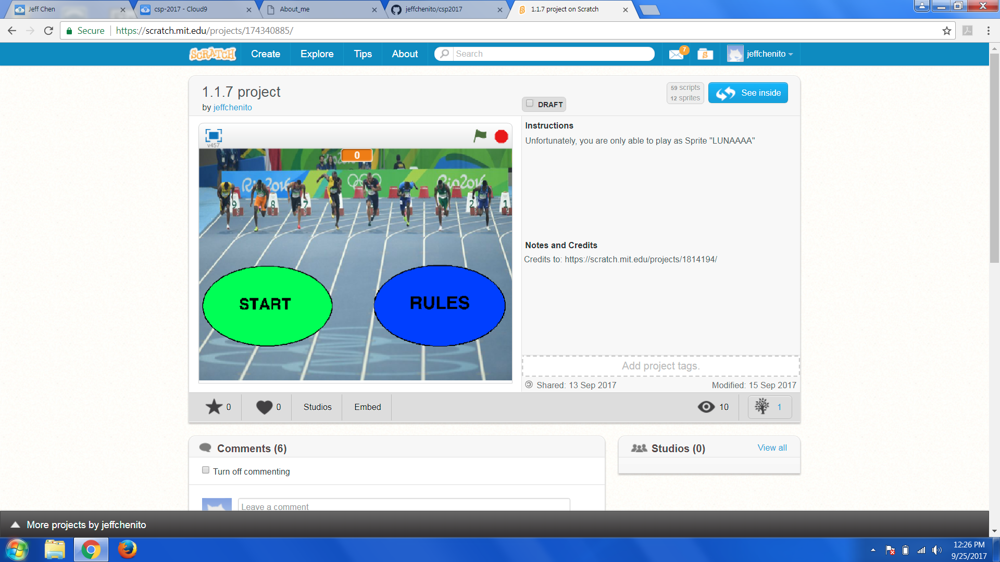
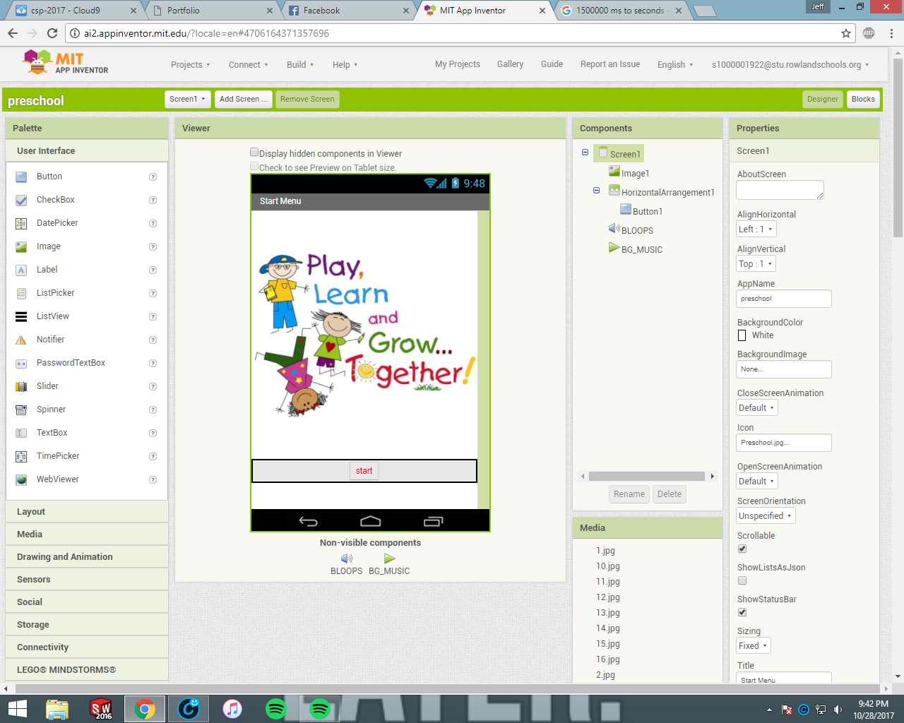
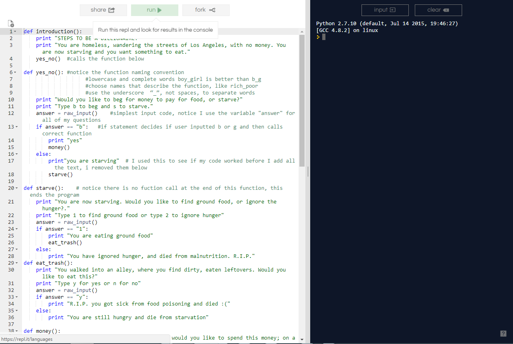
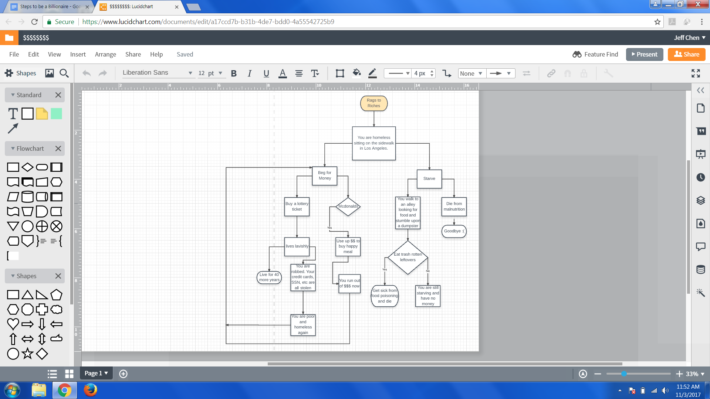

Using Scratch.mit.edu, my partner Brant Rodriguez and I were able to remix the game, "Remix this Dance!" The changes my partner and I made include replacing the background music with our own music, giving new dance movements to each sprite, adding images and background swirl effect. Using the left, right, up and down arrow keys, users are able to switch dance moves! Try it out!
Using Scratch.mit.edu, my partner Brant Rodriguez and I made our own game called 100 meter sprint. The objective of our game is to beat all the computers that are racing against you by only playing Dan Luna sprite. However, at the start of the game you will notice that all other compuiters are moving slow and the only one that proves a challenge is Usain Bolt Sprite. To control Dan Luna Sprite, repeatedly press right and left arrow keys. Faster you press them the faster he moves. Good Luck!
Using appinventor.mit.edu, my partner Wendy Li and I were able to make a preschool learning app. Our app promotes education in a preschool environment making it very user friendly. The features include, Colors, Numbers, Alphabet and Reading! What makes our preschool app superior to all other preschool app is that we have implemented reading feature where preschoolers are able to read the book, "If you give a Mouse a Cookie".
Rags to Riches, By Wesley Hu and Jeff Chen! Using Python, my partner Wesley Hu and I made an interactive story. Our interactive story is about being homeless and working your way to becoming rich. The title of our story is called "Steps to a Billionaire". You start off as a homeless person living on the streets of Los Angeles with no money. You are starving but do not know whether you should ask people for money or starve. Once you beg and receive money from people, you have to decide whether or not you should spend it on a lottery ticket or food for yourself. Try it out!
This is our flowchart diagram for our interactive story, "Steps to a Billionaire"!